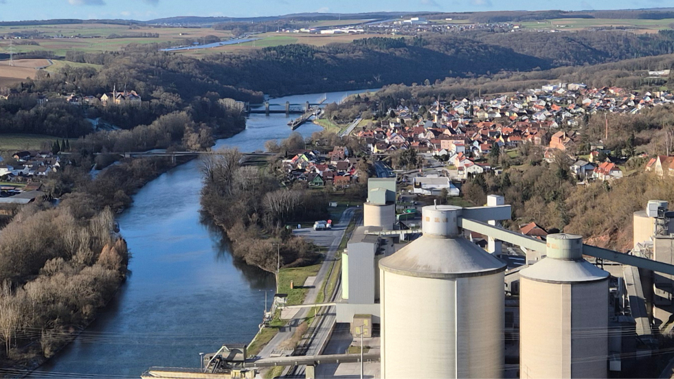

Früher
Heute


F6 – Blick vom Kallmuth aus
Dieses gut erhaltene Bild aus der Zeit vor einer Lengfurter Mainbrücke oder der Schleuse zeigt eindrucksvoll wie Lengfurt sich über die Zeit verändert hat.
Eine visuelle Zeitreise in die Geschichte von Lengfurt.
Dieses gut erhaltene Bild aus der Zeit vor einer Lengfurter Mainbrücke oder der Schleuse zeigt eindrucksvoll wie Lengfurt sich über die Zeit verändert hat.

Dieses Fotos aus der Zeit um 1926 zeigt unter anderem die alte Mainbrücke. Wo heute die Ein- und Ausfahrt in die Schleuse ist, war früher der Schutzhafen. Vom heutigen Industriegebiet Altfeld war in dieser Zeit noch nicht viel zu sehen.


Dieses Fotos von der alten Linde aus zeigt das Kloter Triefenstein. Die Umgehungsstraße und vieles weitere ist in den letzten Jahren dazu gekommen.
Hier sind die Standorte dokumentiert, von wo aus die Fotos aufgenommen wurden.